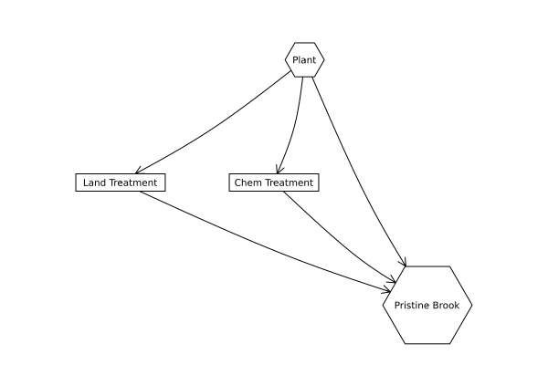

import Pkg
Pkg.activate(@__DIR__)
Pkg.instantiate()BEE 4750 Homework 1: Introduction to Using Julia
If you are enrolled in the course, make sure that you use the GitHub Classroom link provided in Ed Discussion, or you may not be able to get help if you run into problems.
Otherwise, you can find the Github repository here.
Overview
Instructions
- Problems 1-3 consist of a series of code snippets for you to interpret and debug. For Problems 1 and 2, you will be asked to identify relevant error(s) and fix the code. For Problem 3, the code works as intended; your goal is to identify the code’s purpose by following its logic.
- Problem 4 asks you to convert a verbal description of a wastewater treatment system into a Julia function, and then to use that function to explore the impact of different wastewater allocation strategies.
Load Environment
The following code loads the environment and makes sure all needed packages are installed. This should be at the start of most Julia scripts.
using Plots
using GraphRecipes
using LaTeXStringsProblems (Total: 100 Points)
Problem 1 (20 points)
You’ve been tasked with writing code to identify the minimum value in an array. You cannot use a predefined function. Your colleague suggested the function below, but it does not return the minimum value.
function minimum(array)
min_value = 0
for i in 1:length(array)
if array[i] < min_value
min_value = array[i]
end
end
return min_value
end
array_values = [89, 90, 95, 100, 100, 78, 99, 98, 100, 95]
@show minimum(array_values);minimum(array_values) = 0Problem 1.1 (10 points)
Describe the logic error.
Problem 1.2 (5 points)
Write a fixed version of the function.
Problem 1.3 (5 points)
Use your fixed function to find the minimum value of array_values.
Problem 2 (20 points)
Your team is trying to compute the average grade for your class, but the following code produces an error.
student_grades = [89, 90, 95, 100, 100, 78, 99, 98, 100, 95]
function class_average(grades)
average_grade = mean(student_grades)
return average_grade
end
@show average_grade;LoadError: UndefVarError: average_grade not definedProblem 2.1 (10 points)
Describe the logic and/or syntax error.
Problem 2.2 (5 points)
Write a fixed version of the code.
Problem 2.3 (5 points)
Use your fixed code to compute the average grade for the class.
Problem 3 (20 points)
You’ve been handed some code to analyze. The original coder was not very considerate of other potential users: the function is called mystery_function and there are no comments explaining the purpose of the code. It appears to take in an array and return some numbers, and you’ve been assured that the code works as intended.
function mystery_function(values)
y = []
for v in values
if !(v in y)
append!(y, v)
end
end
return y
end
list_of_values = [1, 2, 3, 4, 3, 4, 2, 1]
@show mystery_function(list_of_values);mystery_function(list_of_values) = Any[1, 2, 3, 4]Problem 3.1 (10 points)
Explain the purpose of mystery_function.
Problem 3.2 (10 points)
Add comments to the code, explaining why and how it works. Refer to “Best Practices for Writing Code Comments”, and remember that bad comments can be just as bad as no comments at all. You do not need to add comments to every line (in fact, this is very bad practice), but you should note the purpose of every “section” of code, and add comments explaining any code sequences that you don’t immediately understand.
Problem 4 (40 points)
Cheap Plastic Products, Inc. is operating a plant that produces \(100 \text{m}^3\text{/day}\) of wastewater that is discharged into Pristine Brook. The wastewater contains \(1 \text{kg/m}^3\) of YUK, a toxic substance. The US Environmental Protection Agency has imposed an effluent standard on the plant prohibiting discharge of more than \(20 \text{kg/day}\) of YUK into Pristine Brook.
Cheap Plastic Products has analyzed two methods for reducing its discharges of YUK. Method 1 is land disposal, which costs \(X_1^2/20\) dollars per day, where \(X_1\) is the amount of wastewater disposed of on the land (\(\text{m}^3\text{/day}\)). With this method, 20% of the YUK applied to the land will eventually drain into the stream (i.e., 80% of the YUK is removed by the soil).
Method 2 is a chemical treatment procedure which costs $1.50 per \(\text{m}^3\) of wastewater treated. The chemical treatment has an efficiency of \(e= 1 - 0.005X_2\), where \(X_2\) is the quantity of wastewater (\(\text{m}^3\text{/day}\)) treated. For example, if \(X_2 = 50 \text{m}^3\text{/day}\), then \(e = 1 - 0.005(50) = 0.75\), so that 75% of the YUK is removed.
Cheap Plastic Products is wondering how to allocate their wastewater between these three disposal and treatment methods (land disposal, and chemical treatment, and land disposal) to meet the effluent standard while keeping costs manageable.
Problem 4.1 (10 points)
The flow of wastewater through this treatment system is shown in Figure 1. Modify the edge labels (by editing the edge_labels dictionary in the code producing Figure 1) to show how the wastewater allocations result in the final YUK discharge into Pristine Brook. For the edge_label dictionary, the tuple \((i, j)\) corresponds to the arrow going from node \(i\) to node \(j\). The syntax for any entry is (i, j) => "label text", and the label text can include mathematical notation if the string is prefaced with an L, as in L"x_1" will produce \(x_1\).
using GraphRecipes, Plots
A = [0 1 1 1;
0 0 0 1;
0 0 0 1;
0 0 0 0]
names = ["Plant", "Land Treatment", "Chem Treatment", "Pristine Brook"]
# modify this dictionary to add labels
edge_labels = Dict((1, 2) => "", (1,3) => "", (1, 4) => "",(2, 4) => "",(3, 4) => "")
shapes=[:hexagon, :rect, :rect, :hexagon]
xpos = [0, -1.5, -0.25, 1]
ypos = [1, 0, 0, -1]
graphplot(A, names=names,edgelabel=edge_labels, markersize=0.15, markershapes=shapes, markercolor=:white, x=xpos, y=ypos)
Problem 4.2 (10 points)
Formulate a mathematical model for the treatment cost and the amount of YUK that will be discharged into Pristine Brook based on the wastewater allocations. This is best done with some equations and supporting text explaining the derivation. Make sure you include, as additional equations in the model, any needed constraints on relevant values. You can find some basics on writing mathematical equations using the LaTeX typesetting syntax here, and a cheatsheet with LaTeX commands can be found on the course website’s Resources page.
Problem 4.3 (10 points)
Implement this systems model as a Julia function which computes the resulting YUK concentration and cost for a particular treatment plan. You can return multiple values from a function with a tuple, as in:
function multiple_return_values(x, y)
return (x+y, x*y)
end
a, b = multiple_return_values(2, 5)
@show a;
@show b;a = 7
b = 10Make sure you comment your code appropriately to make it clear what is going on and why.
Problem 4.4 (10 points)
Use your function to experiment with some different combinations of wastewater discharge and treatment. Can you find one that satisfies the YUK effluent standard? What was the cost? You don’t have to find an “optimal” solution to this problem, but what do you think would be needed to find a better solution?